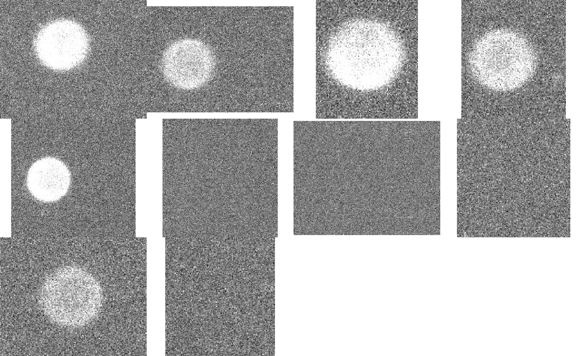
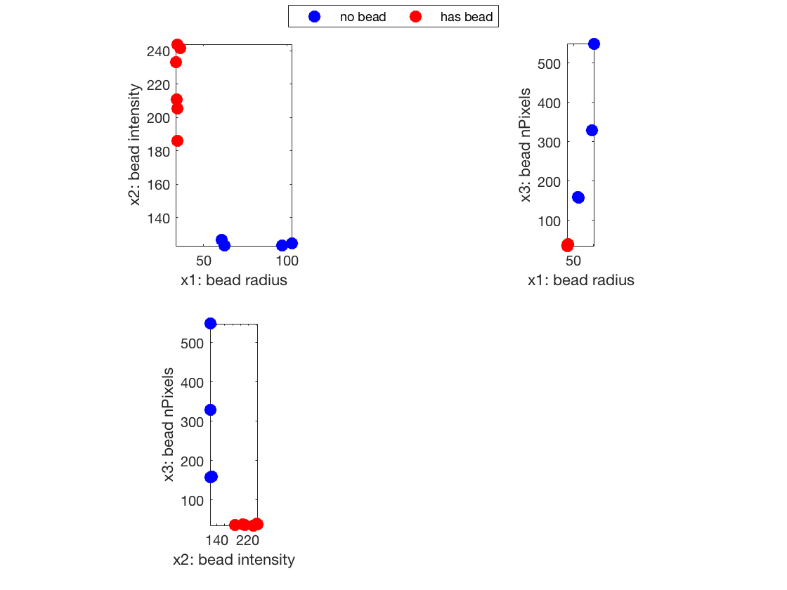

Contents
Bead Judge
The computeModel function uses fitclinear() and training data ml_tdata to predict whether the test images contain a bead or not.
function ml_tdata = computeModel(ml_tdata, test)
Preprocessing
add the MachineLearning Toolbox to path. Toolbox by Jyh-Shing Roger Jang, "Machine Learning Toolbox", available at "http://mirlab.org/jang/matlab/toolbox/machineLearning", accessed on 11/27/2016.
addpath('./machineLearning');
construct X to be a n-by-3 matrix with n being the number of training sample each with 3 feature: radius, intensity and no. Pixels calculated from the beadDetect function.
X = [ml_tdata.Particle_radius{:} ml_tdata.Particle_intensity{:} ...
ml_tdata.Particle_nPixels{:}; ...
ml_tdata.nonParticle_radius{:} ml_tdata.nonParticle_intensity{:} ...
ml_tdata.nonParticle_nPixels{:}];
Construct the corresponding Y matrix n-b-1 where 0 means "no bead" and 1 means "has bead".
Y_particle = ones(ml_tdata.Particle_nTraining, 1); Y_nonParticle = zeros(ml_tdata.nonParticle_nTraining, 1); Y = [Y_particle; Y_nonParticle];
Fitting a linear classification model using the training data X, Y
[Mdl,FitInfo] = fitclinear(X,Y); ml_tdata.model = Mdl; ml_tdata.learned = 1; % If arg(2) is provided, proceed to predict. if nargin == 2
X_test = [];
Y_test = [];
Predict whether the test images has bead or not with the fitclinear model
Show the montage of input images
figure();
imdisp(test);
Warning: The DrawMode property will be removed in a future release. Use the SortMethod property instead. Warning: The DrawMode property will be removed in a future release. Use the SortMethod property instead. Warning: The DrawMode property will be removed in a future release. Use the SortMethod property instead. Warning: The DrawMode property will be removed in a future release. Use the SortMethod property instead. Warning: The DrawMode property will be removed in a future release. Use the SortMethod property instead. Warning: The DrawMode property will be removed in a future release. Use the SortMethod property instead. Warning: The DrawMode property will be removed in a future release. Use the SortMethod property instead. Warning: The DrawMode property will be removed in a future release. Use the SortMethod property instead. Warning: The DrawMode property will be removed in a future release. Use the SortMethod property instead. Warning: The DrawMode property will be removed in a future release. Use the SortMethod property instead. Warning: The DrawMode property will be removed in a future release. Use the SortMethod property instead. Warning: The DrawMode property will be removed in a future release. Use the SortMethod property instead.
Obtain X_test using beadDetect and construct X_test
for i = 1:size(test, 1) im = test{i}; cir = beadDetect(im); X_test = [X_test ; cir(3) cir(4) cir(5)]; label = predict(ml_tdata.model, X_test(i, :)); result_string = sprintf('test case %d has', i); % costruct Y_test using predicted label if label ==1 Y_test = [Y_test; 1]; result_string = strcat(result_string, ' bead'); else Y_test = [Y_test; 0]; result_string = strcat(result_string, ' no bead'); end disp(result_string); end
test case 1 has bead test case 2 has bead test case 3 has bead test case 4 has bead test case 5 has bead test case 6 has no bead test case 7 has no bead test case 8 has no bead test case 9 has bead test case 10 has no bead
Data Visualization
X_test_normalized = [X_test(:,1) X_test(:,2) X_test(:,3)./100]; % normalize the intensity data to 10^2 order % Transfer into ds format for visualization ds = toDS(X_test_normalized', Y_test'); figure; dsProjPlot2(ds);
end
Translate to ds format readable by dsProjPlot2
function ds = toDS(X, Y) ds.dataName = 'bead'; ds.inputName = {'bead radius' 'bead intensity' 'bead nPixels'}; ds.outputName = {'no bead' 'has bead'}; ds.input = X; ds.output = Y;
ans =
Particle_radius: {670x1 cell}
Particle_intensity: {670x1 cell}
Particle_nPixels: {670x1 cell}
Particle_nTraining: 5
nonParticle_radius: {670x1 cell}
nonParticle_intensity: {670x1 cell}
nonParticle_nPixels: {670x1 cell}
nonParticle_nTraining: 7
learned: 1
model: [1x1 ClassificationLinear]